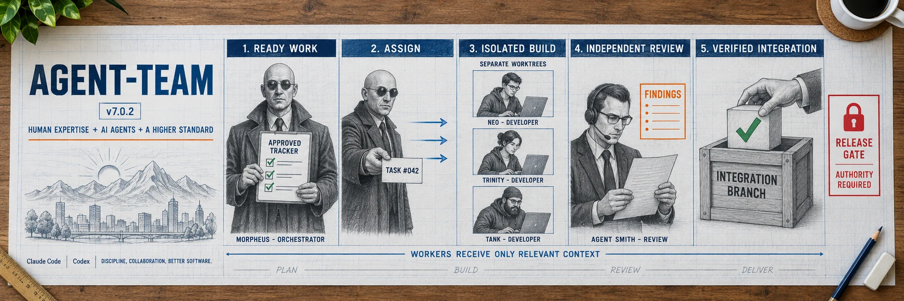

Version 7.1.1
Agent-Team
Agent-Team is a skill for Codex and Claude Code. The pure orchestrator owns scope and integration, developers build bounded tasks in separate worktrees, and a delegated GPT-5.6-Sol verifier checks the revision before it reaches the integration branch.
Type $agent-team help in Codex or /agent-team help in Claude Code.